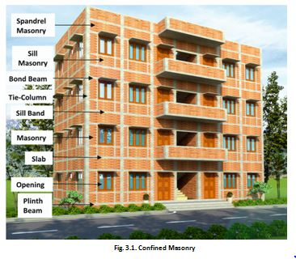

3.1. About Confined Masonry
● Confined masonry is a simple technique of construction wherein masonry walls are embedded with lightly reinforced concrete earthquake resistant masonry buildings.
● Ideal technique for low to medium rise buildings in seismic prone regions as makes use of locally available materials and skills.
● Key components: tie columns, bond beams, masonry walls.
Note:
● Never confuse tie columns and tie beams with columns and beams of a RCC frame structure.
●In confined masonry system the load is carried by the walls, where as the RCC tie columns and the RCC tie Beams bind the walls, roof, etc together and prevent cracking and separation of walls, roof etc during an earthquake .